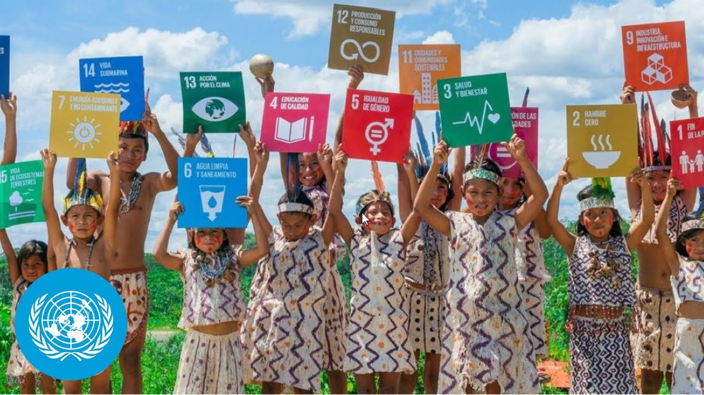

SDGs (Sustainable Development Goals) memiliki peran yang sangat penting bagi Indonesia terutama dalam mengutamakan dan memastikan pembangunan yang inklusif, berkelanjutan, dan merata di seluruh wilayah. Dengan 17 tujuan utama, SDGs menjadi panduan dalam mengatasi banyaknya tantangan dan isu secara global yang mempengaruhi keberlanjutan pembangunan.
Dalam konteks Indonesia, SDGs membantu pemerintah dan masyarakat fokus pada tantangan atau isu yang mendesak seperti pengentasan kemiskinan, peningkatan kualitas pendidikan, pelayanan kesehatan yang lebih baik, juga pelestarian lingkungan hidup. SDGs juga meningkatkan kerjasama dan hubungan antara pemerintah, sektor swasta, dan masyarakat untuk mewujudkan tujuan bersama. SDGs juga terdorong oleh kerjasama secara internasional. Dengan banyaknya kerjasama secara internasional dapat mewujudkan 17 tujuan SDGs bersama dan mempererat hubungan antar negara.
Di Indonesia, dampak dan implementasi SDGs terlihat dalam berbagai sektor. SDGs membantu Indonesia mengurangi tingkat kemiskinan melalui program sosial, seperti bantuan tunai dan akses layanan dasar. Target SDGs juga mendorong peningkatan kualitas pendidikan, layanan kesehatan, dan gizi. Dengan terlaksananya program seperti Jaminan Kesehatan Nasional (JKN) mendukung SDGs. Terjadinya pengurangan emisi karbon, penghijauan, dan pengelolaan sampah yang merupakan upaya untuk melindungi lingkungan dan mengatasi perubahan iklim yang merupakan salah satu tujuan SDGs. Serta mendorong pemberdayaan masyarakat marginal, akses terhadap lapangan kerja, dan pengurangan ketimpangan gender. Investasi dalam infrastruktur seperti energi terbarukan, transportasi, dan teknologi digital berkontribusi pada keberlanjutan dan inklusivitas ekonomi.
Maka SDGs sangat penting dan berdampak pada Indonesia untuk memastikan pembangunan berkelanjutan yang tidak hanya berfokus pada pertumbuhan ekonomi. Namun juga membantu dan meningkatkan secara keseluruhan seperti dalam aspek sosial dan lingkungan.